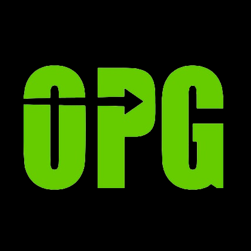
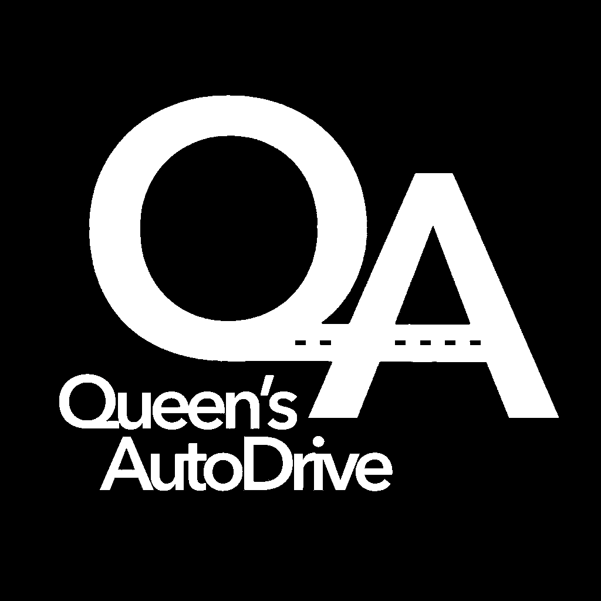
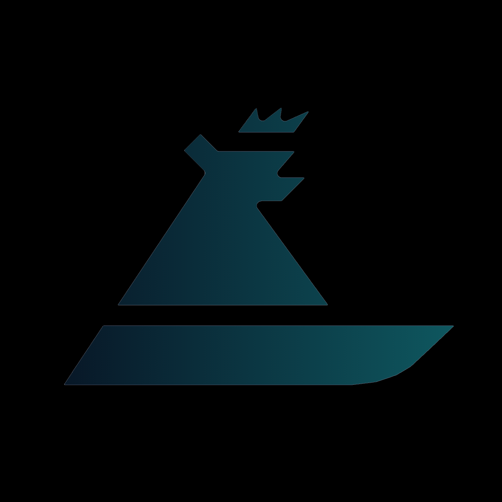
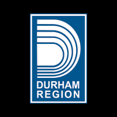
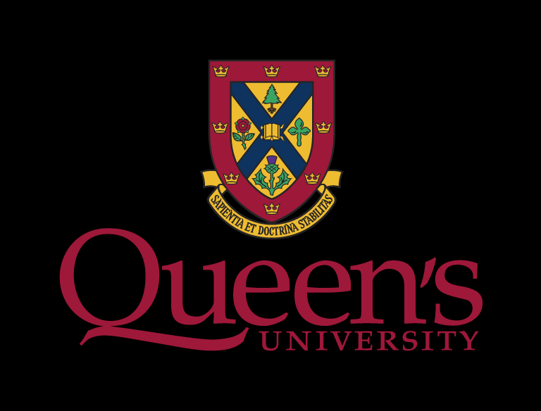

Ontario Power Generation (OPG) - Fuel Handling | Pickering, ON | May 2025 - Aug 2026

Queen's SAE AutoDrive | Kingston, ON | Sep 2024 - May 2025

Queen's aQuatonomous - RoboBoat Challenge | Nov 2023 - Apr 2024

Durham Region | Whitby, ON | May-Aug 2023, May-Aug 2024

Queen's University | Anticipated Graduation: Spring 2027
Dean's Scholar Distinction | GPA: 3.82